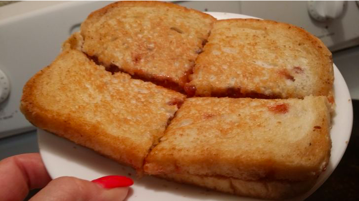

Grilled Peanut Butter and Jelly Sandwich

Ingredients
- 2 slices of bread
- 2 tablespoons of butter
- 1/4 cup of peanut butter
- 1/4 cup of jelly
Directions
- Heat up frying pan on low heat
- Place one tablespoon of butter in the frying pan and allow it to melt completely
- Spread 1/4 cup of peanut butter on one slice of bread
- Spread 1/4 cup of jelly on the remaining slice of bread
- Place two slices of bread together
- Once the pan is heated up, and the butter is melted completely place the sandwich in the frying pan
- Cover the frying pan and allow the sandwich to cook for two minutes
- Flip the sandwich over to ensure that both sides are cooked and browned evenly
- Once the sandwich is cooked to your preference place the sandwich on a plate and serve
- More time may be added if a crisper sandwich is desired